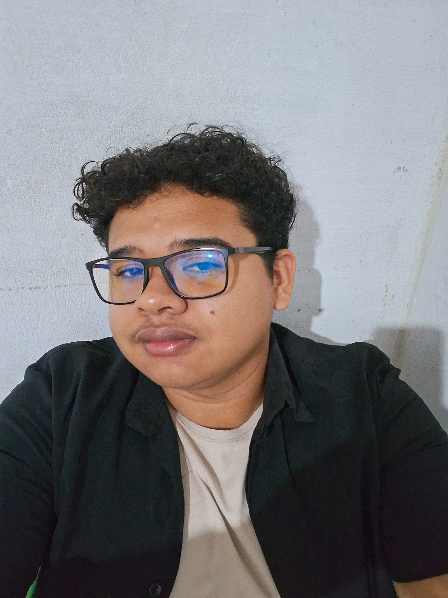

|￣￣￣￣￣￣￣￣￣￣￣￣￣￣|
Welcome to my page
|＿＿＿＿＿＿＿＿＿＿＿＿＿＿|
\ (•◡•) /
\ /

Sou natural de Itarema - CE, tenho 23 anos e sou estudante de Engenharia de Computação pela UFC - Campus Sobral. Tenho grande interesse por tecnologia, natureza e fotografia, gostando de registrar momentos e observar os detalhes ao meu redor. No tempo livre, gosto de ouvir músicas de rock e clássicos antigos.
,---------------------------,
| /---------------------\ |
| | | |
| | Computer | |
| | Engineering | |
| | UFC | |
| | | |
| \_____________________/ |
|___________________________|
,---\_____ [] _______/------,
/ /______________\ /|
/___________________________________ / | ___
| | | )
| _ _ _ [-------] | | (
| o o o [-------] | / _)_
|__________________________________ |/ / /
/-------------------------------------/| ( )/
/-/-/-/-/-/-/-/-/-/-/-/-/-/-/-/-/-/-/-/ /
/-/-/-/-/-/-/-/-/-/-/-/-/-/-/-/-/-/-/-/ /
~~~~~~~~~~~~~~~~~~~~~~~~~~~~~~~~~~~~~~~
® Todos os direitos reservados
Bloco I – Campus de Sobral – Mucambinho